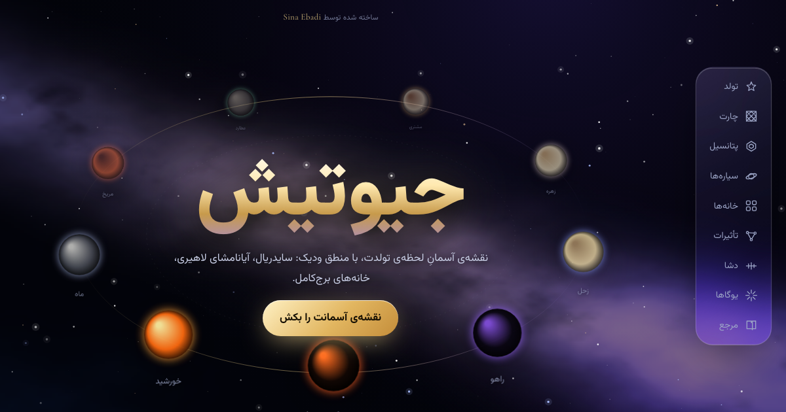
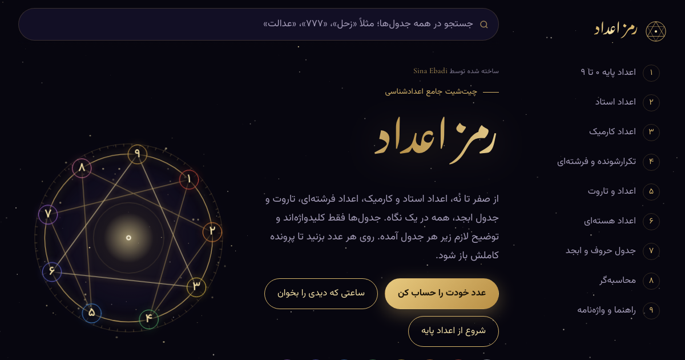
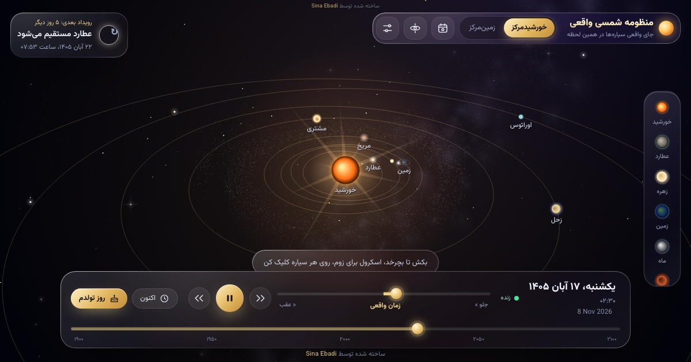

Vibe Astroسینا عبادی · Sina Ebadi
سه پروژه که با «وایب کدینگ» ساخته شدهاند: طراحی، تست و جهتدهی با من، بیشترِ کد با هوش مصنوعی (Claude). هر کدام یک فایل HTML تنهاست و بدون نصب یا وابستگی کار میکند. Three projects built by vibe coding: I directed the design and tested, AI (Claude) wrote most of the code. Each is a single HTML file that works on its own.
✦ Vibe coded with Claude
جیوتیشJyotish
نقشهی آسمان لحظهی تولد با جیوتیش ودیک: چارت، سیارهها، خانهها، دشا و یوگاها.
A Vedic birth chart: planets, houses, dasha periods and yogas.

رمز اعدادNumber Codes
چیتشیت اعدادشناسی: اعداد استاد و کارمیک، اعداد فرشتهای، تاروت، ابجد و محاسبهگر.
A numerology cheat sheet with a calculator and an angel-number reader.

منظومه شمسی واقعیThe Real Solar System
منظومهی سهبعدی با جای واقعی سیارهها، ماشین زمان و تقویم گرفتها.
A 3D solar system with real planet positions, a time machine and an eclipse calendar.